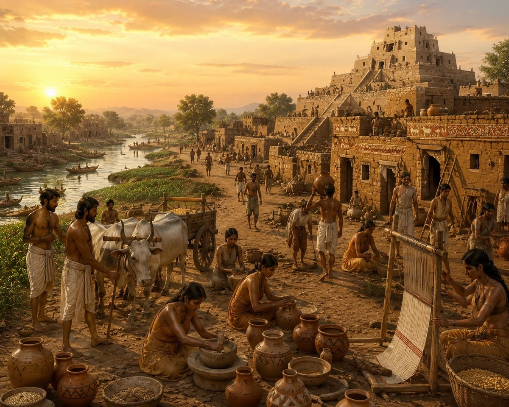

อารยธรรมเมโสโปเตเมีย

อารยธรรมเมโสโปเตเมียเกิดขึ้นบริเวณดินแดนระหว่างแม่น้ำไทกริสและยูเฟรทีส ซึ่งเป็นพื้นที่สำคัญของเอเชียตะวันตก ชาวสุเมเรียนและชนชาติต่าง ๆ ได้สร้างเมืองและพัฒนาระบบการปกครอง มีการประดิษฐ์อักษรคูนิฟอร์มและพัฒนากฎหมายฮัมมูราบี อารยธรรมแห่งนี้จึงมีความสำคัญต่อพัฒนาการของสังคมมนุษย์